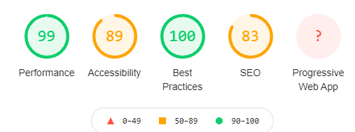
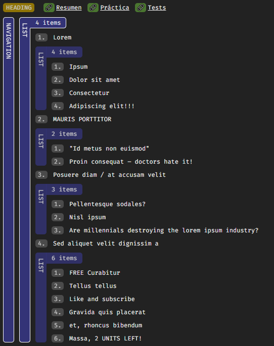
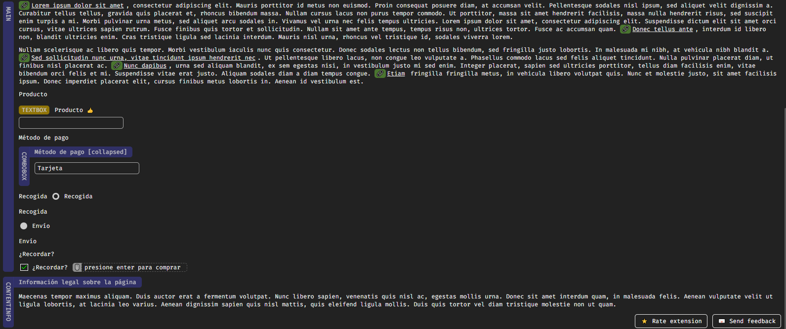

Herramientas utilizadas
Lighthouse de Chromium

Los resultados del test lighthouse de Chromium.
ARIA DevTools


Árbol de accesibilidad generado. Se puede apreciar que aparece el contenido de las etiquetas ARIA-label
ChromeVOX
Se ha utilizado el lector de pantalla ChromeVOX para probar y verificar que la página se puede navegar auditivamente.